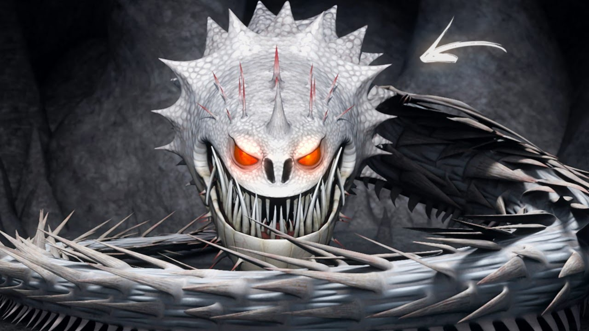
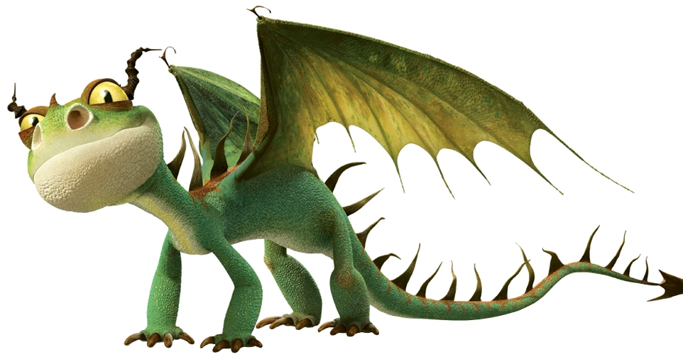
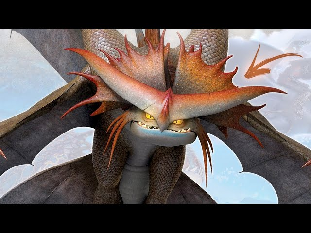

Enciclopedia de todas os dragões existentes em como treinar seu dragão
Fúria da Noite

O Fúria da Noite é a espécie mais lendária e temida do universo Como Treinar o Seu Dragão. Conhecidos como a "cria do relâmpago e da morte", eles disparam rajadas de plasma aquecido, possuem inteligência extrema e escamas escuras que os tornam perfeitamente camuflados nas sombras. O Banguela é o único exemplar conhecido da espécie. Fúria da noite
Classe Relâmpago
Plasma: Os disparos de plasma provenientes de um Fúria da Noite são precisos e frequentemente letais. Cada um dos seis disparos possui uma velocidade impressionante, alcançando até 456 km/h, o que os torna mais rápidos do que um projétil da transformação "Asa de Titã".
Fogo baixo: Com sua chama suave, os Fúria da Noite conseguem aquecer e iluminar a área, como exemplificado na série "Dragões: Corrida até o Limite". Embora essa habilidade não seja tão poderosa quanto seus disparos de plasma, apresentando uma redução de 69% na capacidade de fogo, ela ainda pode ser aproveitada para acender fogueiras, lareiras e situações similares.
Atual:Mundo Escondido, antigamente:Montanhas e Falésias, Florestas Densas e Proximo do mar
Nadder Mortal

O Nadder Mortal é uma das espécies mais famosas, coloridas e inteligentes da franquia Como Treinar o Seu Dragão. Pertencente à classe Rastreadora, ele se destaca pelo seu disparo de magnésio superquente e por sua cauda repleta de espinhos afiados.
Classe Rastreadora
Explosão de magnésio e Disparo de espinhos
Florestas temperadas
Gronkel

O Gronckle é um dos dragões mais populares e resistentes da franquia Como Treinar o Seu Dragão. Pertencente à Classe Rocha, ele se destaca por sua aparência robusta, temperamento dócil e habilidade única de comer pedras para derretê-las e disparar como lava.
Classe Rocha
Explosão de lava e cauda de porrete
Montanhas e cavernas
Pesadelo Monstruoso

O Pesadelo Monstruoso é uma das espécies mais icônicas, agressivas e temidas da franquia Como Treinar o Seu Dragão, famoso por seu hábito de se incendiar. Ele é o principal representante da Classe Brasa, sendo representado na história principalmente pelo dragão Dente de Anzol
Classe Brasa
Explosão de Fogo,pode fazer o seu corpo pegar fogo
Florestas
Ziper Arrepiante

O Zíper Arrepiante (Hideous Zippleback) é um dos dragões mais exóticos e icônicos da franquia Como Treinar o Seu Dragão. Famoso por sua personalidade dupla, ele tem a capacidade única de criar explosões em vez de cuspir fogo.
Classe misterio
Ataque de Gás e Faísca: A cabeça esquerda expele um gás verde altamente inflamável, enquanto a direita produz uma faísca ou chama elétrica para detoná-lo. Isso pode gerar desde pequenas rajadas até explosões devastadoras e cortinas de fumaça.
Ataque de Ouroboros Flamejante: Apresentado em Como Treinar o Seu Dragão 2, permite que o dragão morda sua própria cauda e acenda o gás. Ele vira uma roda de fogo rodopiante que atropela inimigos como se fossem pinos.
Camuflagem de Gás: O gás verde também pode ser usado como uma cortina de fumaça espessa para esconder o dragão durante emboscadas ou fugas.
Cavernas; Florestas
Tambor trovao

O Tambor Trovão (Thunderdrum) é um dragão da classe Maré da franquia Como Treinar o Seu Dragão. Ele é famoso por sua potente explosão sônica, capaz de atordoar inimigos e até extinguir o fogo de outros dragões. Habita cavernas marinhas e lagunas escuras.
Classe Marinha
Poder Sonoro: Seu poderoso rugido consegue afundar navios e é audível a quilômetros de distância. Os filhotinhos também emitem sons fortes o bastante para empurrar objetos e atordoar presas.
Cavernas marinhas e Lagunas escuras
Chifre Estrondoso

Ele é um dragão pouco maior que um fúria da noite,sua cor é vermelho e verde escuro e ele tem a habilidade de soltar um fogo com muito gás fazendo com que cuspa enormes bolas de fogo. Ele é um dragão intimidador pois tem enormes chifres que quebram até uma pedra. Ele foi encontrado salvando a ilha de Soluço e foi adicionado a nova classe Rastreadora
Classe Rastreadora
Rastreamento: Seu olfato é extremamente apurado. Ele consegue rastrear vikings e objetos a quilômetros de distância seguindo a menor pista de cheiro, como demonstrado quando encontra Soluço a partir do seu capacete.
Furtividade: Apesar de grande, consegue camuflar-se muito bem na folhagem e em florestas.
Detecção de Desastres: Possui uma alta sensibilidade para prever desastres naturais, como terremotos e tsunamis, com bastante antecedência.
Míssil Flamejante: Seu poder de fogo é um projétil explosivo de longo alcance que se solidifica antes do impacto.
Florestas
Bafo Quente

esse dragão e um defende seu territorio com suas pequenas explosoes que variam de acordo com a pedra ingerida. São nervozos territoriais dão arrancadas velozes eles cospem uma leve explosão de magnésio.
Classe Rocha
Sopro de Lava: Dispara rajadas de rocha derretida. Quanto mais ele se alimenta, maior e mais forte fica o seu tiro.
Mandíbula Poderosa: Possui uma força extrema, sendo capaz de mastigar minérios de ferro e esmagar pedras e metais com facilidade.
Armadura Natural: Suas escamas são densas e resistentes, o que lhe confere uma defesa formidável contra diversos ataques.
Voar Dormindo: É a sua habilidade mais icônica. Por ter hábitos noturnos e ser muito preguiçoso, ele consegue dormir no meio do voo sem perder o ritmo ou a direção.
cavernas profundas ou áreas rochosas
Dramilhão

Seu nome parte de um trocadilho de Dragão + Milhão,e não é à toa. Primos distantes dos Transformasa, os Dramilhões são conhecidos como Mímicos dos Dragões/Papagaios dos Dragões,e foram cruelmente caçados e judiados por Caçadores de Dragão novatos para o treinamento.
Classe Misterio
Fogo Mímico Dramilhões tem a incrível capacidade de copiar o poder de fogo de outros dragões.Embora não fique claro como isso acontece,muitos especulam que seja por algum tipo de reserva interna química que pode ser "ativada" para copiar o composto químico do fogo oponente,o que explicaria o tipo de fogo "verdadeiro" que o Titã pode reproduzir.Porém,outros acreditam que seja apenas a aparência do fogo que é copiada,mas o fogo em si seja o mesmo.Ainda existem dúvidas quanto a isso.
Ilha do Dramilhão
Suspiro da Morte

O Suspiro da Morte (também chamado de Morte Murmurante) é um dragão aterrorizante da franquia Como Treinar o Seu Dragão. Classificado na Classe Rocha, ele é famoso por seu corpo longo e serpentino, sem pernas, e por possuir seis fileiras de dentes giratórios que permitem perfurar o solo e criar túneis subterrâneos rapidamente.
Classe Rocha
Arcada Dentária Rotativa: Suas seis fileiras de dentes giram em direções opostas. Isso permite que ele escave túneis a velocidades extremas no subsolo.
Disparo de Anéis de Fogo: Ele expele rajadas de fogo em formato de anel, que servem principalmente para afastar inimigos enquanto ele se move.
Efeito de Vácuo: Graças à sua movimentação debaixo da terra, ele consegue sugar terra e detritos, criando buracos imensos para engolir suas presas.
Lançamento de Espinhos: Pode disparar espinhos afiados de qualquer parte do corpo para atacar à distância.
Resistência Elevada: Seu corpo fino é extremamente resistente, capaz de suportar até mesmo ataques diretos de um Fúria da Noite sem sofrer ferimentos graves.
habita principalmente o subsolo. Ele prefere viver em cavernas escuras, túneis profundos e locais escondidos sem luz solar, pois é extremamente vulnerável à luz forte
Grito da Morte

O Grito da Morte é um dragão enorme considerado raro. Ele praticamente nasce de Suspiros da Morte dentro de ovos grandes e avermelhados. O grito da morte também tem um grito poderoso capaz de desorientar os dragões e atordoar os vikings.
Classe Rocha
O Grito da Morte pode soltar espinhos de qualquer parte do seu corpo, também lança gigantes bolas de fogos, e assim como o Suspiro da Morte, caça no sub-solo com a sua poderosa arcada dentária que podem fazer grandes túneis subterrâneos.
cavernas profundas, túneis subterrâneos e áreas rochosas no subsolo.
Chicote Cortante

O Chicote Cortante, também conhecido como Tesoura de Vento no Brasil, é um dragão da Classe Afiada do universo Como Treinar o Seu Dragão. Famoso por sua cauda flexível e afiada como uma lâmina, ele possui escamas metálicas, habilidades acrobáticas incríveis e, quando domesticado, é extremamente leal.
Classe Afiada
Cauda Letal: Possui uma cauda preênsil, afiada como uma lâmina e telescópica, que pode ser usada como um chicote para desferir golpes precisos.
Armadura Reflexiva: Suas escamas metálicas refletem a luz e servem como uma armadura resistente.
Lágrimas Venenosas: Os olhos desta espécie produzem lágrimas tóxicas.
Fogo Azul: Capaz de expelir chamas de um azul brilhante e intenso.
densas florestas e regiões montanhosas ou costeiras
Terror Terrivel

Esta ameaça minúscula é inconfundível, com um corpo pequeno e asas. Terrores podem ser encontrados empoleirados nas vigas de celeiros, no assoalho de casas. ] Apesar de um único Terror ser muito pequeno para levar uma ovelha ou causar muitos danos a um Viking, eles são encontrados geralmente em bandos.
Sopro de Fogo Preciso: Apesar do tamanho, seu disparo é certeiro e capaz de causar pequenas explosões, o que é ideal para caçar e lutar.
Furtividade e Agilidade: Move-se com a flexibilidade de um lagarto. Consegue voar e correr distâncias sem demonstrar cansaço, o que o torna um excelente ladrão de objetos.
Inteligência Elevada: Aprende muito rápido, adapta-se facilmente a situações de risco e pode agir em bando para atacar ou defender.
Mandíbula Forte: Possui dentes afiados e uma mordida poderosa para sua escala, compensando a força bruta com ataques rápidos e estratégicos.
Todos os habitats conhecidos
Morte Rubra

O Morte Rubra (também chamado de Morte Vermelha) é um dos dragões mais colossais, antigos e cruéis do universo Como Treinar o Seu Dragão. Pertencente à temida Classe Rocha, ele age como um "alfa" mafioso, escravizando outros dragões através do medo e controlando-os para trazer sua comida.
Classe Rocha
Controle de Outros Dragões: Possui um sentido sobrenatural e um sinal de homing que lhe permite controlar mentalmente espécies menores. Ele age como o "chefão" de um bando, escravizando os outros para caçar e alimentá-lo dentro de seu ninho vulcânico.
Poder de Fogo Extremo: Dispara explosões massivas de gás metano que criam labaredas gigantescas. É capaz de incinerar frotas inteiras de navios com um único sopro.
Imunidade a Magma: Sua pele é blindada e totalmente à prova de fogo e magma, permitindo que ele nade e hiberne dentro de vulcões ativos.
Sucção de Ar: Capaz de inspirar profundamente para criar um vácuo ao seu redor, sugando dragões menores e objetos diretamente para dentro de sua boca.
Sentidos Aguçados: Tem três pares de olhos (com excelente visão) e um olfato superdesenvolvido.
vulcões ativos, adormecidos ou extintos.
Corta-Tormenta

O Corta-Tempestade (Stormcutter) é um dragão lendário da franquia Como Treinar o Seu Dragão. Ele pertence à classe Afiada e destaca-se por sua cauda longa, corpo robusto e inteligência notável
Classe Afiada
Quatro Asas: Possui dois pares de asas sobrepostas que formam um X. Quando abertas, proporcionam uma agilidade, manobrabilidade e estabilidade de voo inigualáveis.
Visão e Flexibilidade: Com o rosto e os chifres lembrando uma coruja, ele consegue girar o pescoço em 180° graus, o que lhe dá um campo de visão superior.
Ataque de Tornado: Emite rajadas de fogo contínuas que giram rapidamente, criando mini-tornados ou rajadas em espiral devastadoras
Camuflagem e Furtividade: Por possuírem hábitos noturnos e lembrarem corujas, são extremamente furtivos, conseguindo se esconder ou usar o ambiente a seu favor.
Inteligência Elevada: São dragões orgulhosos, nobres e muito observadores, que compreendem comandos complexos e avaliam situações com grande perspicácia.
florestas densas e regiões geladas
Besta Implacavel

Uma das 5 Espécies Alpha, as Bestas Implacáveis são os únicos Alpha que competem entre si por espaço por questões de espécie.
Classe Maré
poder de gelo extremo, controle mental sobre outros dragões (sendo um dragão Alfa) e força física monumental para construir geleiras e destruir navios
oceanos profundos, cadeias de montanhas geladas e cavernas submarinas isoladas
Ataque Triplo

O Ataque Triplo é um dos dragões mais formidáveis e complexos do universo de "Como Treinar o Seu Dragão", famoso por suas três caudas de escorpião e instinto guerreiro.
Classe Relampago
Trio de Caudas Venenosas: Cada cauda possui um tipo de veneno: entorpecente, alucinógeno e um que ferve o sangue. Elas também podem se unir formando uma única arma poderosa.
Rolamento Defensivo: Capaz de enrolar-se nas próprias caudas para proteger sua forte carapaça farpada.
Rajadas de Fogo: Lança potentes bolas de fogo e explosões térmicas.
Velocidade e Armadura: Possui grande agilidade e um instinto de combate mortal desde o nascimento.
áreas florestais e regiões rochosas de penhascos, com preferência por ilhas mais quentes e menos úmidas.
Canção da Morte